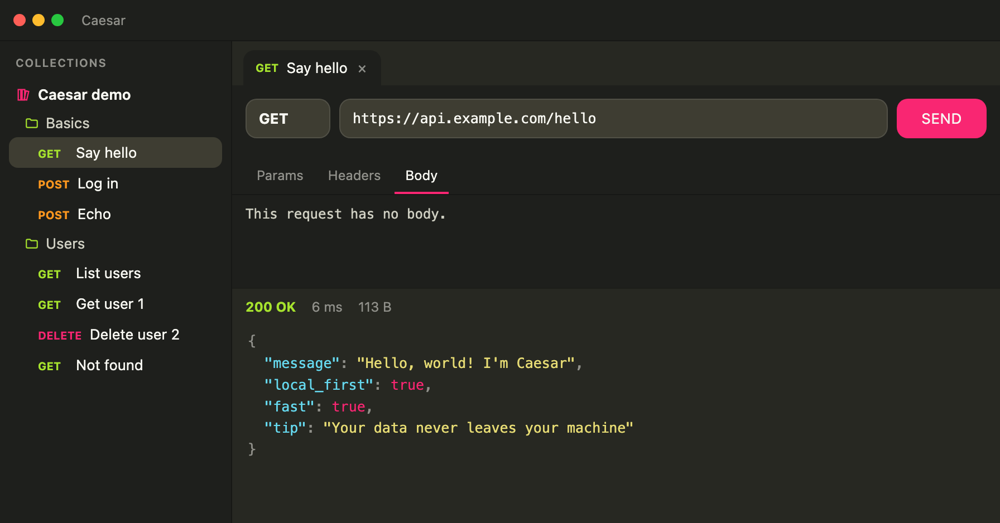

不吃内存的 API 客户端。
笨重的企业级 API 客户端随处可见。Caesar 是原生应用（Tauri + Rust），在你的机器上飞快运行，并以端到端加密同步你的集合，价格只相当于两杯咖啡。
访客模式免费 · 支持 macOS、Windows 和 Linux
为什么选择 Caesar
为速度而生，不碍你的事。
无感同步（E2E）
云端的便利，但 Google 和我们都无法读取你的数据。
原生速度
告别 Electron。基于 Tauri 和 Rust 构建。
神奇导入器
用 Ctrl+V 粘贴 cURL 命令，界面自动生成。
-H "Content-Type: application/json" \
-d '{"name":"Ada"}'
高效管理
瞬间切换环境（AWS DEV、Local），并将密钥保存在系统密钥环中。
立即体验
浏览器里的真实 Caesar。
选择一个请求，编辑 URL 或请求体，然后点击发送。这是模拟的复刻版：无需安装任何东西。

功能齐全
你期待的 API 客户端功能，一应俱全，而且更轻量。
测试与脚本
用脚本验证响应。你熟悉的 pm.* 脚本照常可用。
GraphQL
专用的 Query 和 Variables 编辑器，就在 Caesar 里。
WebSocket
连接、发送，并实时查看消息。
变量与配置档案
按集合设置 {{variables}}，另有全局变量和环境配置档案。
内置认证
在集合上设置一次授权，处处继承。
代码生成器
把任意请求变成可直接粘贴的代码。
导入与导出
来自其他 API 客户端的集合、HAR、YAML、OpenAPI 和 cURL。随时可导出。
本地 Mock 服务器
用文件夹中的请求一键启动 mock。免费。
Collection Runner + CSV
配合 CSV 数据运行整个集合。
团队与共享Pro
通过代码与团队共享集合和工作区。
标签页、搜索与快捷键
键盘优先：Ctrl+T、Ctrl+Enter、Ctrl+F。快捷键可自定义。
主题与 5 种语言
Monokai、Dracula、Tokyo Night、Nord、One Dark 和 GitHub Light。
- Ubuntu 上可通过
sudo snap install caesar或应用商店安装；Microsoft Store 版本即将推出 - cURL 导入拥有独立对话框
- 更清爽的侧边栏：+ 和 ⋯ 菜单，另支持右键菜单
- 把文件夹拖入其他文件夹更轻松，不会再误选文本
- 灰显的 Pro 功能会引导你前往账户页面
- 6 款主题及界面细节优化
价格
清晰明了，没有负担。
无需账号，免费开始。需要同步时再升级 Pro。
Pro
加密同步，不设上限
€14.99/ 年
- 包含访客版全部功能
- 无限工作区
- Caesar Sync E2E，覆盖你的所有设备
- Collection Runner + CSV
- 与团队共享
一键取消。销售商（Merchant of record）：Polar。14 天内可退款。
团队版
一个密钥，全团队通用
€9.90/ 人
按年计费 · 最少 10 人（€99）
- 包含 Pro 全部功能
- 一个许可证密钥供整个团队使用
- 人数由你决定（10 人起）
- 加密同步、团队协作与无限工作区
一键取消。销售商（Merchant of record）：Polar。14 天内可退款。
Pro 每年自动续订。含税情况视所在国家/地区而定。
下载 Caesar
最新版本
从 Ubuntu App Center（Snap Store）下载，或在终端中运行以下命令安装：
sudo snap install caesar
更喜欢传统安装包？下载适用于 Ubuntu/Debian 的 .deb
Caesar 即将登陆 Windows 的 Microsoft Store，支持一键安装和自动更新。
SmartScreen 提示：使用上方的直接安装程序（.exe）时，仍会出现蓝色的 Windows SmartScreen 界面（点击更多信息 → 仍要运行）。应用在 Microsoft Store 上架后，你就可以从商店下载，该警告将不再出现。
常见问题
安全、警告与补充说明
What is the SmartScreen warning on Windows?
Why isn't it signed on Linux?
sudo snap install caesar（会自动更新）。使用 .deb 时，如果文件位于你的主目录，apt 可能会显示一条无害的提示。使用 AppImage 时，请先赋予可执行权限（chmod +x Caesar_*.AppImage）；如果你的发行版无法打开，请安装 libfuse2。And on macOS?
How does Caesar Sync's E2E encryption work?
Does it collect telemetry or analytics?
Do I need an account?
How do I cancel Pro, and what about refunds?
Is it open source? What is Fair Source (FSL)?
What is the Collection Runner with CSV?
Which systems does it run on?
.exe 和 .msi；Microsoft Store 版本即将推出）、macOS（Intel 和 Apple Silicon，通用 .dmg）以及 Linux（Ubuntu Snap Store：sudo snap install caesar，另有 .deb 和 AppImage）。它会通过签名安装包或应用商店自动更新。